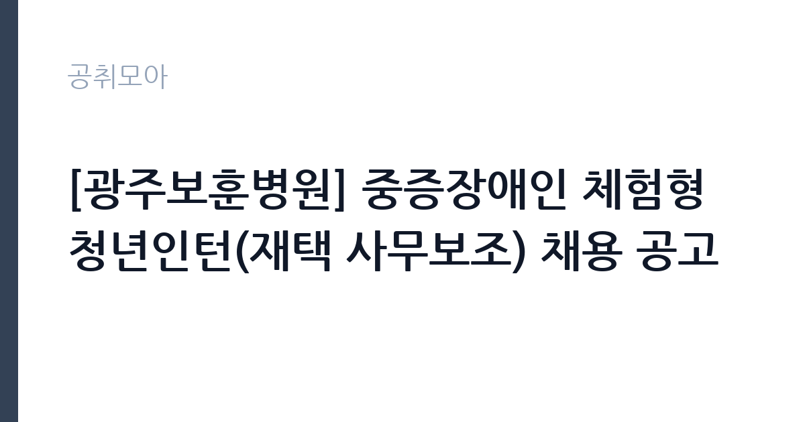

[공공기관] [광주보훈병원] 중증장애인 체험형 청년인턴(재택 사무보조) 채용 공고
한국보훈복지의료공단 · 전남광주 · 마감 2026-11-02 (D-10) · 출처 잡알리오

한눈에 보는 모집 조건
| 기관 | 한국보훈복지의료공단 |
|---|---|
| 공고명 | [광주보훈병원] 중증장애인 체험형 청년인턴(재택 사무보조) 채용 공고 |
| 고용형태 | 청년인턴(체험형) |
| 근무지 | 전남광주 |
| 게시일 | 2026-10-23 |
| 마감일 | 2026-11-02 (D-10) |
지원자격, 이렇게 읽으세요
- 공공기관 채용공시
- 세부 조건은 원문 공고문 확인
모집단위는 청년인턴(중증장애인 재택 사무보조) 6명입니다. 체험형 인턴은 취업 준비생에게 직무 경험을 제공하는 단기 채용입니다. 근무 기간이 3개월에서 6개월로 정해져 있고 인턴료가 지급됩니다. 기관에 따라 수료증 발급이나 채용 시 가점 같은 혜택이 붙습니다. 서류 단계에서 요건을 충족하지 못하면 이후 전형을 준비할 기회가 없습니다. 학력·경력·자격 요건을 항목별로 대조해 표시해 두고, 경력은 재직증명서와 경력증명서로 입증해야 합니다. 증명서에 직무 내용이 구체적으로 적혀 있지 않으면 경력으로 인정받지 못하는 경우가 있으니 발급 전에 기재 내용을 확인하십시오. 자격증은 유효 기간과 등록 상태까지 확인해야 하고, 자격 취득 예정자로 지원하려면 공고문에 예정자 허용 조항이 있는지 반드시 봐야 합니다. 중증장애인 요건과 재택근무용 PC 보유가 필수 조건입니다. 연령은 임용일 기준 만 15세 이상 34세 이하이며, 두 요건 중 하나라도 충족하지 않으면 서류 단계에서 제외됩니다. 공고문의 응시자격 표를 보면 자격 항목이 여러 줄로 나뉘어 있으므로, 각 줄을 하나씩 체크하며 본인 해당 여부를 표시해 두면 누락을 줄일 수 있습니다.
이 공고의 포인트
이 공고의 첫 번째 포인트는 고용 형태입니다. 짧은 기간이지만 직무 경험과 수료 실적을 쌓을 수 있고, 기관에 따라 채용 시 가점이 붙습니다. 두 번째는 모집단위가 분명하다는 점입니다. 청년인턴(중증장애인 재택 사무보조) 6명 단위로 선발하므로 배치 이후 담당 업무의 범위를 미리 가늠할 수 있습니다. 세 번째는 근무지입니다. 전남광주 기준으로 근무지가 정해져 있어 통근 시간과 비용을 함께 계산해야 합니다. 접수 마감은 2026-11-02로 길지 않아, 공고를 늦게 확인하면 준비 시간이 그대로 줄어듭니다. 공고가 올라온 지 얼마 되지 않아 아직 지원자 수가 많지 않을 가능성이 있습니다.
전형은 어떻게 진행되나
선발 절차는 원문 공고문에 단계별로 적혀 있습니다. 채용 절차는 공고문에 안내된 순서대로 진행되며, 서류 접수 마감 후에는 추가 접수나 서류 보완이 이뤄지지 않는 것이 원칙입니다. 서류심사에서는 응시자격과 제출서류의 형식 요건을 기계적으로 확인하므로, 경력 증명서의 기간과 직무 내용이 공고의 요건과 정확히 맞아야 합니다. 면접은 지원자 수에 따라 집단면접과 개별면접으로 나뉘고, 직무 관련 질문과 상황 대응 질문이 함께 나옵니다. 합격자 발표는 개별 통보 또는 홈페이지 게시로 이뤄지며 이후 임용 절차가 진행됩니다. 경력 증명서에 직무 내용이 적혀 있지 않으면 인정받지 못할 수 있으므로 상세 기재를 요청하십시오.
원문에서 확인한 전형 방식
· 청년인턴직(중증장애인_재택사무보조) (6) (필수) 장애인고용촉진 및 직업재활법 제2조 및 시행령 제4조에 따른 중증장애인 (필수) PC를 보유하여 재택근무 컴퓨터 업무가 가능한 자 ※ 공통 필수사항 (필수) 공단 인사규정 제18조(결격사유 및 임용취소)에 해당되지 않는 자 (필수) 임용일 기준 만15세 이상, 만34세 이하(청년고용촉진특별법 시행령 제2조)
이런 분께 추천해요
- 전남광주에서 출퇴근이 가능한 분
- 청년인턴(중증장애인 재택) 직무 경험이나 관련 자격을 갖춘 분
- 청년인턴(체험형) 조건과 근무 기간을 확인하고 지원할 수 있는 분
지원 전 체크리스트
- 응시자격 요건을 충족하는가 — 경력은 증명서로 입증해야 합니다
- 인턴 기간과 수료 요건, 지원 자격 전형을 확인했는가
- 제출서류 목록을 모두 준비했는가 — 누락 시 서류 단계에서 탈락합니다
- 접수 마감 2026-11-02 이전에 접수 방식을 확인해 제출했는가
모집 일정과 제출 타이밍
접수는 2026-11-02에 마감됩니다. 공고 게시일 2026-10-23부터 계산하면 준비 기간은 약 10일입니다. 우편 접수는 도착 기준으로 판정되는 경우가 많아 마감일 소인만 믿으면 안 됩니다. 마감 이후에는 어떤 사유로도 접수가 인정되지 않으므로 하루 전 제출을 목표로 하십시오. 광주 근무지는 대중교통 노선이 제한적인 구역이 있어 통근 수단을 미리 점검하십시오.
직무 이해하기: 공공기관
공공기관은 도로와 수자원, 농지, 부동산 시장 관리 같은 공적 기능을 수행합니다. 현장 사업소는 도로와 시설 유지 관리, 조경과 환경 관리 업무를 직접 수행하며 계절 사업에 따라 기간제 인력을 채용합니다. 한국보훈복지의료공단 광주보훈병원은 국가유공자 진료를 담당합니다. 재택 사무보조 인턴은 문서 정리와 데이터 입력을 원격으로 수행합니다. 업무 강도와 근무 시간대는 부서 배치에 따라 달라지므로 면접에서 확인하는 것이 가장 정확합니다.
자기소개서 작성 팁
청년인턴(중증장애인 재택) 지원서는 직무 연관성을 앞세우는 것이 핵심입니다. 첫 문단에 지원 직무와 본인 경험을 한 문장으로 연결하고, 이어서 담당했던 업무의 규모와 결과를 수치로 제시하십시오. 직무 경험이 많지 않다면 경험의 양보다 과정을 구체적으로 쓰는 편이 낫습니다. 어떤 상황에서 무엇을 판단했고 어떤 결과가 나왔는지 순서대로 서술하면 신뢰가 생깁니다. 지원 동기와 기여 방안은 한 문단씩 짧게 유지하고, 가장 자신 있는 경험에 분량을 몰아주십시오. 마지막 문장은 포부보다 구체적인 실행 계획으로 끝내는 것이 좋습니다.
면접 준비 포인트
면접에서는 청년인턴(중증장애인 재택) 직무를 얼마나 이해하고 있는지, 그리고 한국보훈복지의료공단의 사업을 어느 정도 알고 있는지 확인합니다. 답변은 상황, 판단, 조치 순서로 정리하면 전달이 분명해집니다. 모르는 질문에 추측으로 답하면 감점 요인이 되므로, 확인 후 답하겠다고 밝히는 편이 안전합니다.
급여·근무조건 읽는 법
체험형 청년인턴은 기관이 정한 인턴료 기준에 따라 월급 또는 일급으로 보수를 지급합니다. 인턴료는 최저임금 이상이어야 하며, 2026년 적용 최저임금은 시급 10,320원, 월 환산 2,156,880원(209시간 기준, 고용노동부 고시 제2025-47호)입니다. 인턴료에 식대나 교통비가 포함되는지 별도 지급되는지, 4대 보험에 가입되는지가 실제 수령액을 가릅니다. 계약 기간이 짧으므로 총액과 함께 수료 후 가점·채용 연계 여부를 확인하는 편이 실익이 큽니다. 이번 공고 본문에는 연봉·월급 실액이 제시되지 않아 구체적인 금액은 첨부 공고문의 처우 항목에서 확인해야 합니다. 실수령액을 계산하려면 세금과 4대 보험료를 빼야 합니다. 공고문에는 세전 금액만 제시되는 경우가 많으므로, 월 급여에서 약 9% 안팎의 공제가 발생한다고 보고 대략적인 수령액을 가늠하십시오. 부양가족 수와 비과세 항목에 따라 차이가 나므로 정확한 금액은 급여 담당 부서에 문의하는 것이 가장 확실합니다. 수당 항목과 지급 주기도 함께 확인하십시오.
자주 묻는 질문
- 선발 인원과 직급은 어떻게 되나요?
이번 공고의 모집단위는 청년인턴(중증장애인 재택 사무보조) 6명입니다. 직종별 인원과 직급은 공고문 모집분야 항목에 표로 제시되어 있으니 원문에서 확인하십시오. - 근무지는 어디인가요?
전남광주입니다. 세부 근무지와 출퇴근 조건은 원문 공고문의 근무예정지 항목에서 확인할 수 있습니다. - 보수는 얼마인가요?
청년인턴(체험형) 신분에 따라 한국보훈복지의료공단의 임금 규정 또는 보수규정을 적용받습니다. 본문에 확정 금액이 없으므로 첨부 공고문 처우표에서 기본급과 수당을 나눠 확인하십시오.
함께 보면 좋은 공고
[공공기관] 우체국물류지원단 서울지사 동서울물류사업소 기간제(발착직) 채용 공고 — 마감 2026-10-29[공공기관] 국방기술품질원 2026년 하반기 정기채용(임용후보자(정규직, 무기사업직)) — 마감 2026-11-05[공공기관] 2026년 제6회 마포문화재단 직원 채용 공고( ~11.2.(월) 18:00 한)_ 5급 무대기계, 7급 무대음향 — 마감 2026-11-02출처: 잡알리오 공개정보를 바탕으로 공취모아가 정리한 안내글입니다. 모집 조건·일정은 변경될 수 있으니 지원 전 반드시 원문 공고문을 확인하세요. 본 글은 정보 제공용이며 합격을 보장하지 않습니다.